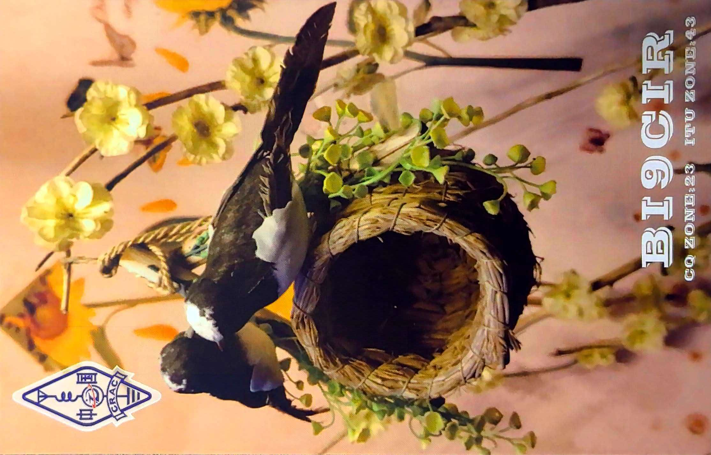
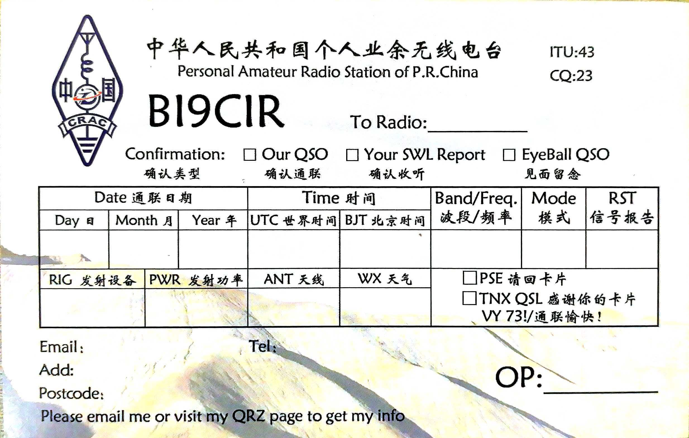

2026
进度公示
进度公示
railway-feasibility-report
铁路可行性研究报告工具：「普速铁路桥隧工业务学习平台」可行性研究在线公示（仓库文件 feasibility-report-standalone.html，含 9 大模块 163 章知识体系与 3514 题题库设计）；工具主体部署于离线内网电脑，不开放公网。
HTML离线部署铁路工程
PORTFOLIO / 个人站
铁路工程从业者 · 纯前端开发 · AI / AIGC 深度实践者
白天与铁路工程打交道，业余时间写代码——把工程里重复繁琐的事做成顺手的小工具， 也用 AI 从零做出能直接玩的小游戏；同时深度使用 AIGC 技术，让图片生成、视频生成与文案制作成为日常生产力。 所有作品均为纯前端实现，打开即用，多数支持离线。
你好，我是小石头。我的主业在铁路工程行业，长期和工程资料、安全管理和各种报表打交道—— 那些大量重复、依赖经验、又容不得出错的工作，是我开始写代码最直接的原因。
我相信「工具应当打开就能用」。所以我做的项目几乎都是纯前端、零后端的实现： 一个 HTML 文件就是一个完整的作品，拷到离线电脑上也能跑。从铁路可行性研究报告工具、 公路工程计算器合集，到铁路沿线安全知识闯关 H5，都是这个思路的产物。
另外两条线都与 AI 有关。其一是AI 辅助开发：我用 Trae 等 AI 工具从零做出过像素跑酷、 Roguelike 卡牌、程序员节解谜游戏等作品，持续探索「一个人 + AI」能把一个想法推进到什么程度。 其二是AIGC 内容创作：把 AI 图片生成、视频生成、文案制作深度融入内容生产流程， 覆盖作品封面、宣传素材与工程文档写作等场景。这个站点本身，同样由 AI 协助构建。
主业所在，覆盖铁路设计技术、维护养修与安全宣传等方向：可行性研究报告工具、沿线安全知识闯关 H5 等项目，都源于工程一线的真实需求。
从 Roguelike 卡牌、像素跑酷到 1024 解谜游戏，再到公路工程计算器合集——游戏、实用插件与网页设计均以纯前端实现：单文件、零后端、打开即用。
深度使用 AIGC 技术进行内容生产：AI 图片生成、视频生成与文案制作，覆盖作品封面、宣传素材与文档写作等场景。首个案例「千禧年风格系列一」已上线，去看看。
以下作品由 Seedream 5.0 Pro 生成。「千禧年风格系列」试图复刻 2000 年前后中国小镇街头的胶片质感。 左右滑动或点击箭头切换系列，点击图片可查看大图。


Seedream 5.0 Pro · 千禧年街头 / 铁路记忆 / 童年记忆 · 每组 4 幅 · 左右滑动查看
精选置顶作品三件：一件工程工具、一件互动游戏、一件离线 PWA。AIGC 图片、文学原创、AI 项目与音乐作品均已收入「04 作品」子页面。
铁路可行性研究报告工具：「普速铁路桥隧工业务学习平台」可行性研究在线公示（仓库文件 feasibility-report-standalone.html，含 9 大模块 163 章知识体系与 3514 题题库设计）；工具主体部署于离线内网电脑，不开放公网。
1024 程序员节互动解谜游戏：单文件 HTML 实现 6 关解谜、隐藏碎片收集（源码注释 / Console / DOM / LocalStorage）、排行榜与模拟故障彩蛋，全程在浏览器本地运行。
另有早期版本与素材仓库：1024-kunka-adventure（1024 游戏初版）、
railway-safety-images（铁路安全宣传图 H5 素材）。
全部项目与标签检索见 AI 项目展示；AIGC 视觉与文字作品见 AIGC 图片作品、文学原创作品。
导航 03 升级成「综合」折叠栏，新开了铁路技术、航空爱好和 U/V 卫星通讯三条支线——卫星页里塞了一个 ISS 未来 48 小时的过境预报，以中国大地原点为观测点，TLE 轨道直接在浏览器里算。AIGC 图片作品页换上 jsDelivr 图床加速，每次打开只随机展示一个系列，其余靠搜索召唤。「其他」菜单做了减法：无线电入口退役，编号整体前移。站点和工地一样，永远在返工与养护里长出新结构。
1024 之前的那个晚上，我把 6 关解谜、隐藏碎片、排行榜和一堆「假蓝屏、假病毒」彩蛋塞进了同一个 HTML 文件。碎片藏在源码注释、Console、隐藏 DOM 和 LocalStorage 里——毕竟这是给程序员玩的解谜，F12 才是正确的打开方式。
pixel-runner 是一次实验：需求只出现在我的描述里，美术、关卡、手感调校全部交给 TraeWork AI 完成。结论是「一个人 + AI」完全可以把一个游戏想法推进到能玩、能上线的程度——前提是你得会提需求，也得懂验收。
工地上最不缺的就是「没信号」。the MATH office 把常用的公路工程计算器做成纯前端 PWA，装一次就能离线用。好工具的定义很简单：在你最需要它的时候，它一定能打开。
工作之余，我是业余无线电爱好者（HAM）。空气里那些看不见的电波， 和代码一样让我着迷——一根天线、一段频谱，就能和远方素未谋面的人通上话。
呼号：BI9CIR
坐标 CQ Zone 23 · ITU Zone 43，持 CRAC 颁发的个人业余电台执照。 欢迎在电波里找我，也欢迎交换 QSL 卡片——卡片虽轻，联着的是世界另一端的同好。VY 73!

